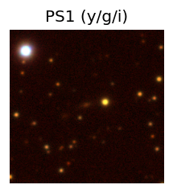
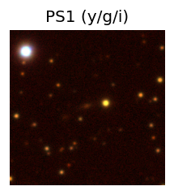
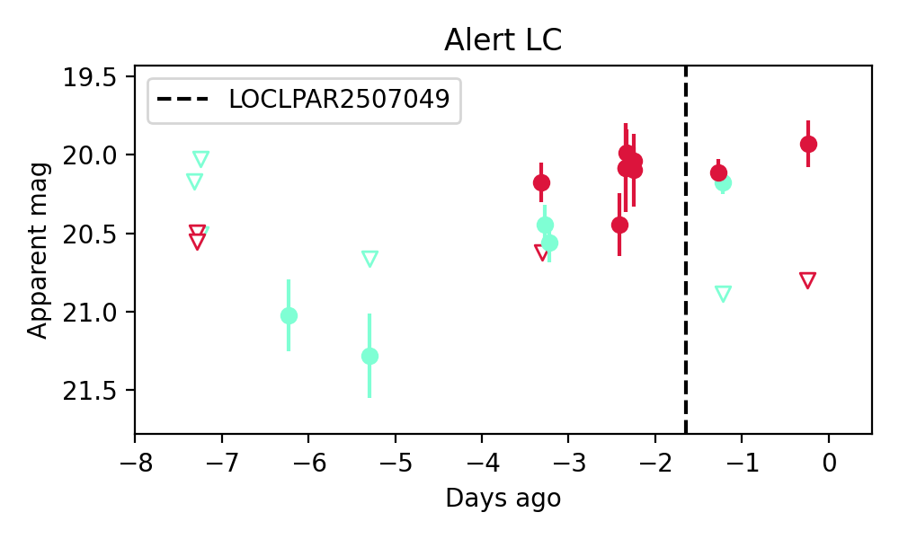
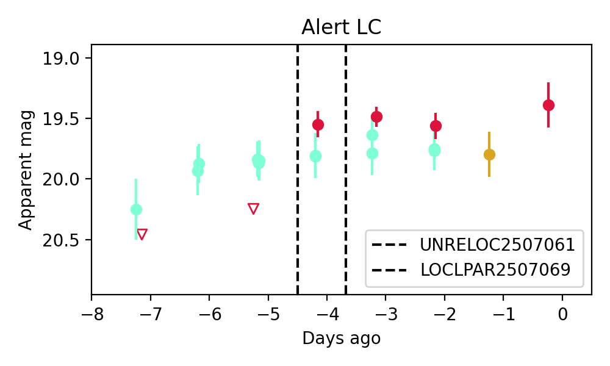
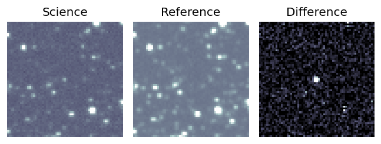
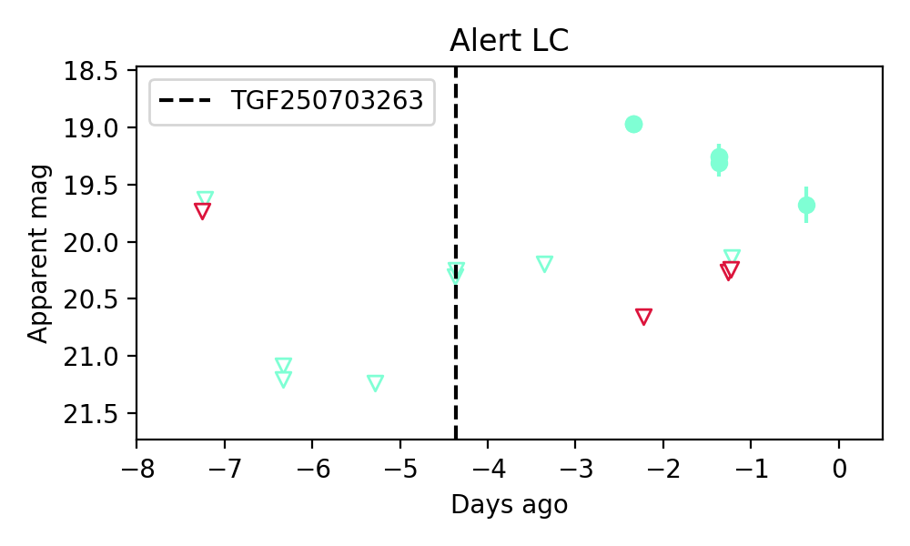

Candidate List 20250706Previous Day Next Day
Section 1: New Sources (age<1d) Section 2: Old (1-5d) sources observed last nightplaceholder
Section 1: New Afterglow/FBOT Cands Last Night (0)
Section 2: Older Sources Observed Last Night (4)
0. ZTF25aazogdu (Afterglow?) [Back to Top] [Share] [Trigger Swift] [Fritz] [Lasair]RA, Dec: 298.61034, 5.56725 19h54m26.48s, 5d34m2.10sGalactic (l, b): 45.27064, -11.31572 ext(g-r) = 0.187 

PS1: 1 source in 3 arcsec Closest: d = 0.54 arcsec photoz=0.15+/-0.02 peak abs mag = -19.84
LegacySurvey: 0 sources in 3 arcsec

Extinction-corrected gr color:
From alerts: -0.13 +/- 0.12 mag
Rise Rate:
g: 0.19 mag/day
r: -99 mag/day
i: -99 mag/day
Fade Rate:
g: 0.22 mag/day
r: -99 mag/day
i: -99 mag/day
1. ZTF25aazppzj (Afterglow?) [Back to Top] [Share] [Trigger Swift] [Fritz] [Lasair]RA, Dec: 359.13882, 6.12243 23h56m33.32s, 6d 7m20.74sGalactic (l, b): 99.15779, -54.19644 ext(g-r) = 0.053

SDSS (10 arcsec):Found SDSS spec-z: z=0.09; peak abs mag = -18.81
PS1: 0 sources in 3 arcsec
LegacySurvey: 0 sources in 3 arcsec

Extinction-corrected gr color:
From alerts: 0.21 +/- 0.16 mag
Consistent with synchrotron, g-r>0!
Rise Rate:
g: -99 mag/day
r: 0.63 mag/day
i: -99 mag/day
Fade Rate:
g: -99 mag/day
r: -99 mag/day
i: -99 mag/day
2. ZTF25aazshbz (Afterglow?FBOT?) [Back to Top] [Share] [Trigger Swift] [Fritz] [Lasair]RA, Dec: 280.61165, -9.75658 18h42m26.80s, -9d-45m-23.69sGalactic (l, b): 23.22546, -2.45703 ext(g-r) = 1.102
PS1: 1 source in 3 arcsec Closest: d = 1.38 arcsec photoz=0.36+/-0.05 peak abs mag = -25.74
LegacySurvey: 0 sources in 3 arcsec
Rise Rate:
g: 0.91 mag/day
r: -99 mag/day
i: -99 mag/day
Fade Rate:
g: 0.31 mag/day
r: -99 mag/day
i: -99 mag/day
3. ZTF25aazsjmu (Afterglow?) [Back to Top] [Share] [Trigger Swift] [Fritz] [Lasair]RA, Dec: 282.59544, -15.60325 18h50m22.90s, -15d-36m-11.70sGalactic (l, b): 18.86077, -6.81695 ext(g-r) = 0.343
PS1: 1 source in 3 arcsec Closest: d = 0.08 arcsec photoz=0.44+/-0.08 peak abs mag = -24.13
LegacySurvey: 0 sources in 3 arcsec

Extinction-corrected gr color:
From alerts: -2.03 +/- 99 mag
Rise Rate:
g: 1.21 mag/day
r: -99 mag/day
i: -99 mag/day
Fade Rate:
g: 0.32 mag/day
r: -99 mag/day
i: -99 mag/day